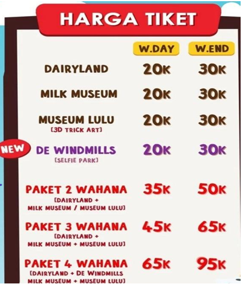
Pada hari senin (lihat harga tiket w.day), Andi dan Budi bersama kedua orang tuanya pergi liburan ke puncak bogor. Mereka memasuki wahana liburan di sana. Kemudan mereka membeli tiket masuk. Daftar harga tiket masuk dapat dilihat pada gambar di samping. Perhatikan tabel di bawah ini!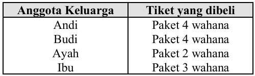
Jika ayah mereka sekarang memiliki uang Rp600.000,00 berapa sisa uang ayah mereka setelah membeli tiket wahana?Dengan memperhatikan tabel berikut,
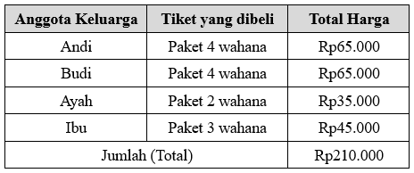
Sisa uang Ayah = Rp600.000 - Rp210.000 = Rp390.000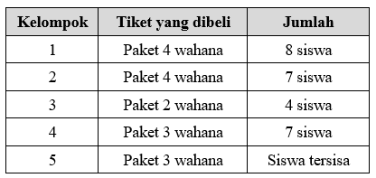
Pernyataan yang benar di bawah ini adalah . . .
dengan memperhatikan tabel berikut ini;
Pernyataan :
1. Kelompok 2 menghabiskan Rp445.000,00 untuk membeli tiket. Kelompok 2 Menghabiskan Rpp455.000 (Salah)
2. Kelompok 1 menghabiskan Rp70.000,00 lebih banyak dari kelompok 5. Rp520.000 - Rp450.000 = Rp70.000 (Benar)
3. Kelompok 3 menghabiskan Rp175.000,00 lebih sedikit dari pada kelompok 4. Rp315.000 - Rp140.000 = Rp175.000 (Benar)
4. Kelompok 2 menghabiskan Rp5.000,00 lebih sedikit dari pada kelompok 5. Rpp455.000 - Rp450.000 = Rp5.000, ini lebih banyak, bukan lebih sedikit. (Salah)
Jawaban : 1. S, 2. B, 3. B, 4. S
Hitungan :
323.323 - 115.634 = 207.689, lalu
207.689 + 639.456 = 847.145
Jawaban : B. Ribuan
Perhitungan :
Pernyataan 1 : Kelerng Umar = Kelereng Ali + 20 butir
Pernyataan 2 : Kelerng Ali + Kelerng Umar = 50 butir
Kelerng Ali + Kelerng Umar = 50 butir
Kelerng Ali + Kelerng Ali = 50 butir
2 x Kelerng Ali = 50 butir
Kelerng Ali =
30
2
= 15 butir
Jawaban : C. 35 butit
Perhitungan :
24 + 36 : 5 x 20 = 24 + 7,2 x 20
= 24 + 144 = 168
Jawaban : A. 168
Perhatihan gambar berikut ini
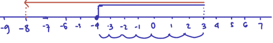
-4 + 7 - 11 = 3 - 11 = -8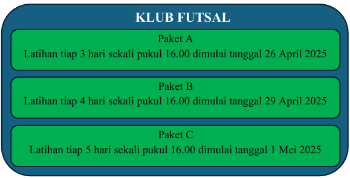
Andi mendaftar paket A, Budi mendaftar paket B dan Dani mendaftar paket C. Tentukan pernyataan yang benar di bawah ini!1. Menentukan Tanggal Latihan Pertama Kali Bersama (KPK dari pola latihan)
Ketiganya bertemu pertama kali pada tanggal 11 Mei 2025. (Pernyataan 1 Benar)
2. Menentukan Jadwal Latihan Bersama Berikutnya (KPK interval = KPK(3, 4, 5) = 60 hari)
Pertemuan kedua terjadi pada tanggal 10 Juli 2025. (Pernyataan 2 Benar)
3. Andi dan Budi latih Bersama (KPK(3, 4) = 12 hari)
Jadi, Andi dan Budi tidak berlatih bersama pada tanggal 31 Mei 2025. (Pernyataan 3 Salah)
4. Cek Frekuensi Mereka Bertiga Berlatih Bersama di Bulan Mei
Jadi, mereka bertiga hanya berlatih bersama 1 kali di bulan Mei (yaitu tanggal 11 Mei). (Pernyataan 4 Salah)
Kesimpulan: Pernyataan yang benar adalah Pernyataan 1 dan Pernyataan 2.
1. Menentukan faktorisasi prima dari setiap bilangan:
2. Menghitung FPB:
Jadi, jumlah teman Sandi paling banyak yang bisa mendapatkan kelereng tersebut adalah 20 orang.
Jawaban : C. 20 orang.1. Menghitung jumlah kelereng yang didapat tiap orang per warna:
Kesimpulan: Pilihan jawaban yang benar adalah B. 6 kelereng.
| Jenis belanjaan | Berat |
|---|---|
| Ayam | 4,5 kg |
| Nanas | $4\frac{1}{3}\text{ kg}$ |
| Semangka | $\frac{17}{4}\text{ kg}$ |
| Daging | $4\text{ kg}$ |
| Telur | $4\frac{2}{5}\text{ kg}$ |
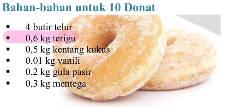
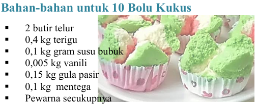
Tentukan pernyataan di bawah ini yang benar!
Jawaban :
Yang benar Pernyataan 1 dan Pernyataan 3
Belum Ada Pembahasan untuk soal ini
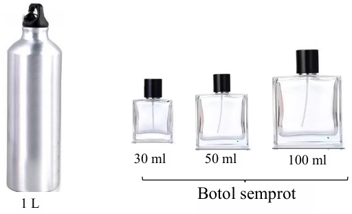
Sebuah konter minyak wangi sedang mengemas 2 botol minyak wangi berisi 1 liter ke dalam 3 jenis botol semprot. Ukuran botol semprot seperti pada gambar di atas. Penjual di konter tersebut akan memindahkan 2 botol minyak wangi 1 liter ke dalam 3 jenis botol semprot. Jika ada 13 botol semprot kapasitas 100 ml harus diisi, sisa minyak wangi akan dimasukan ke dalam beberapa botol semprot kapasitas 50 ml dan 30 ml dan harus habis tanpa sisa. Berapa total volume yang dapat dimasukan ke dalam botol semprot kapasitas 50 ml?Pembahasan :
1. Volume minyak wangi yang tersedia:Jawaban : 1. B, 2. B, 3. S, 4. B
Jawaban : A. 6 botol, B. 7 botol dan C. 8 botol.
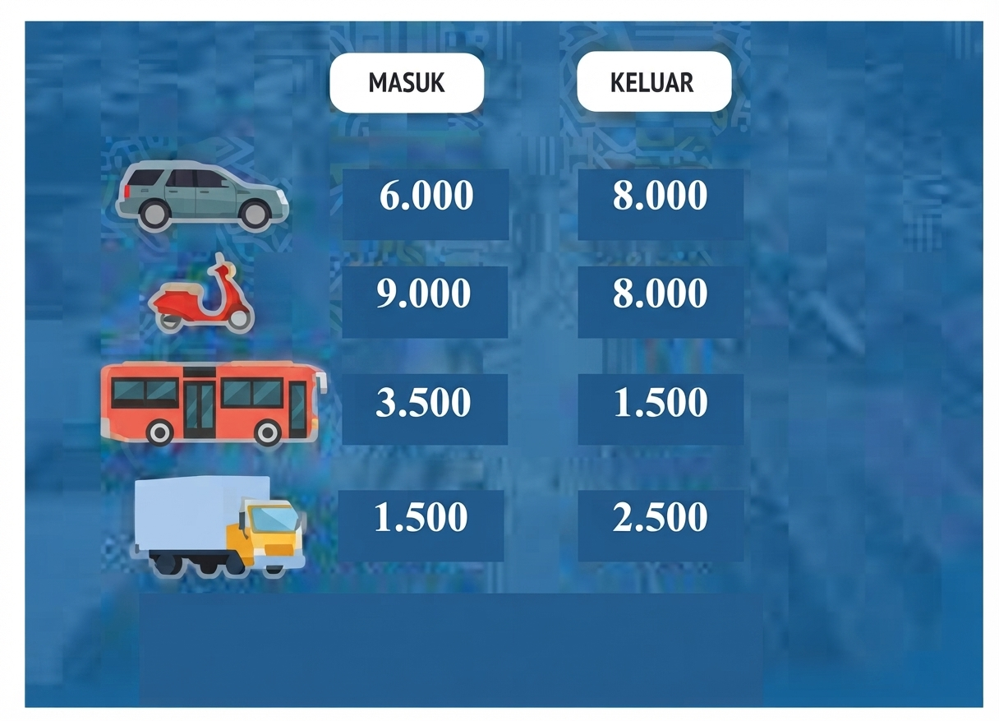
Gambar di atas adalah data kendaraan yang masuk dan keluar di sebuah kota. Kendaraan pada data di atas terdiri dari mobil pribadi, motor, bus dan truk. Tentukan pernyataan yang benar di bawah ini!Jawaban : A dan C.
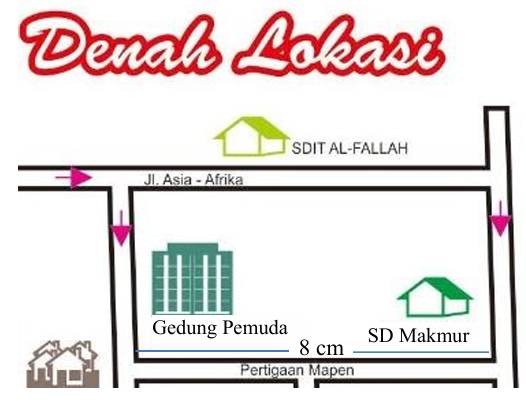
Jarak sebenarnya dari Gedung Pemuda ke SD Makmur adalah 560 meter. Budi ditugaskan memperbesar gambar di atas menjadi 2 kali lipatnya. Tentukan pernyataan yang benar di bawah iniJawaban : D. $1:3.500$.
Terima kasih telah mengerjakan ujian ini.
Total Soal: 0
Soal Dikerjakan: 0
Skor/Poin Anda: 0
(Skor Maksimal 100)